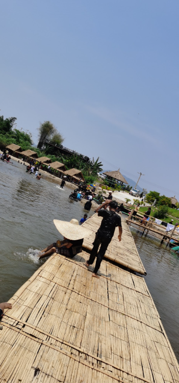
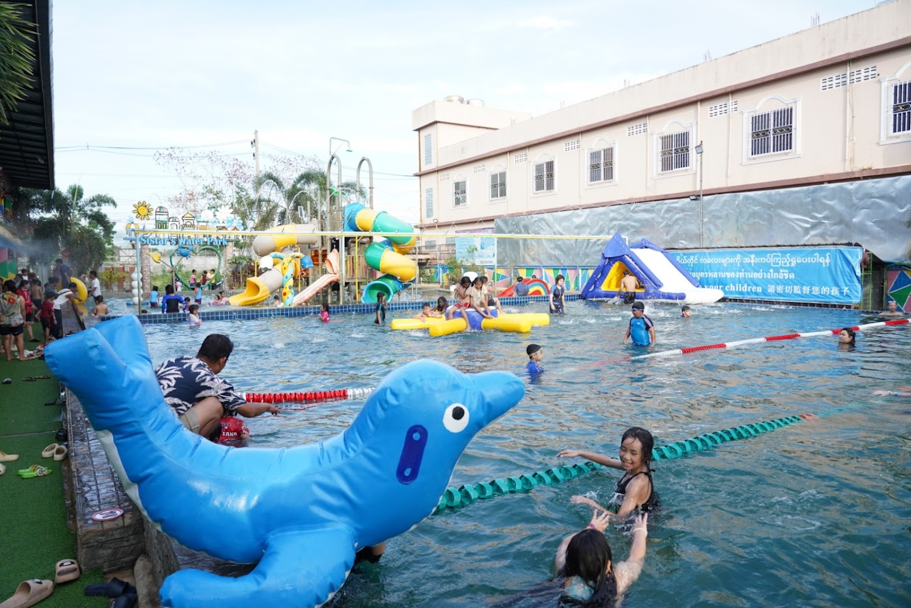
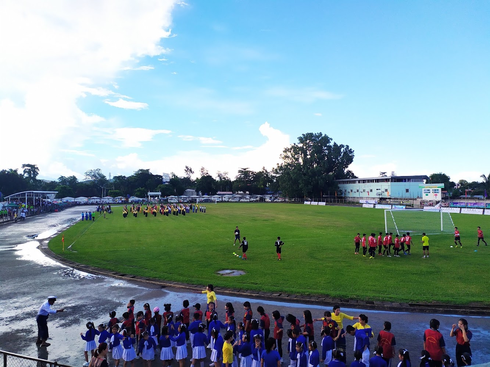
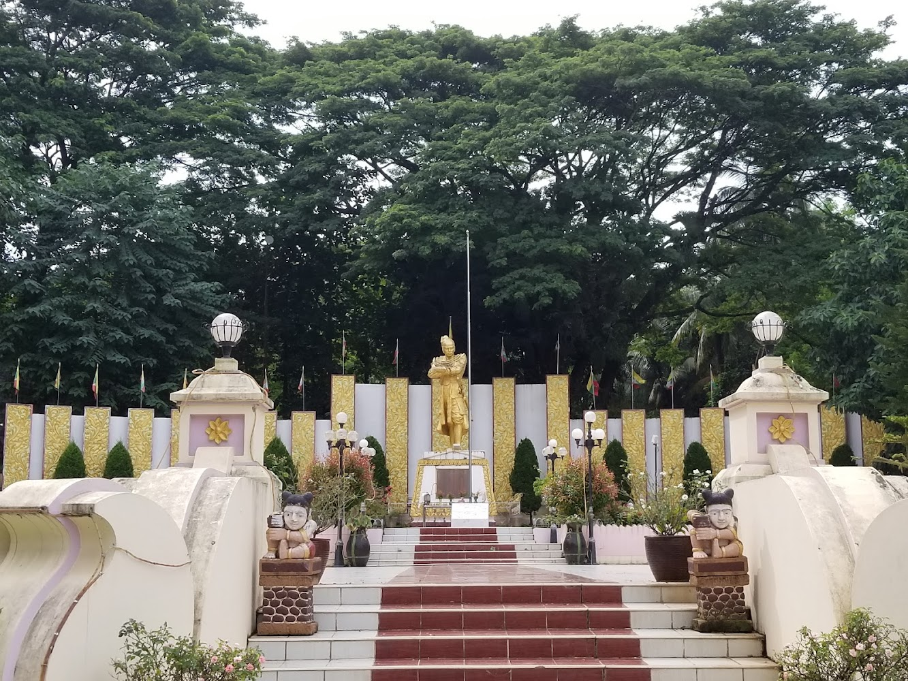
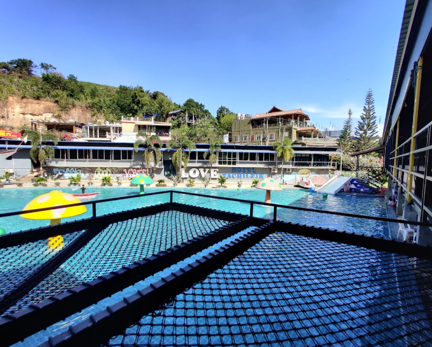
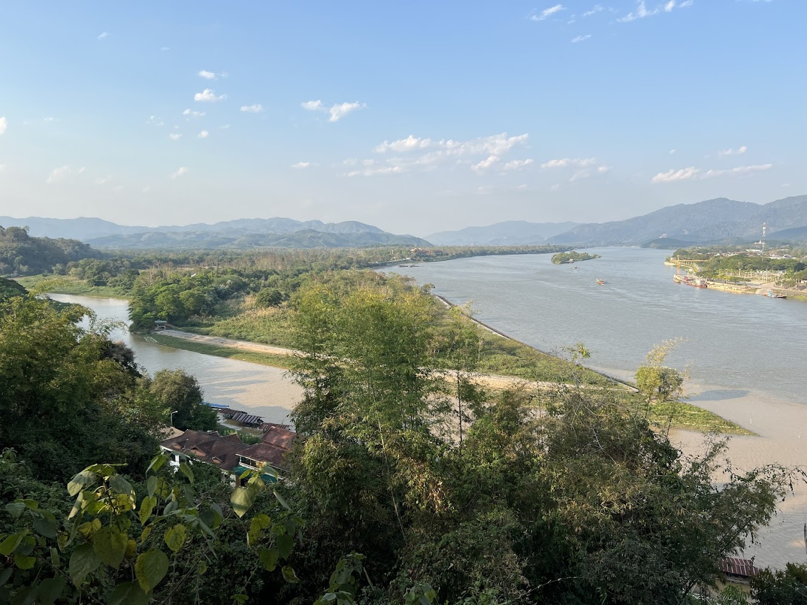
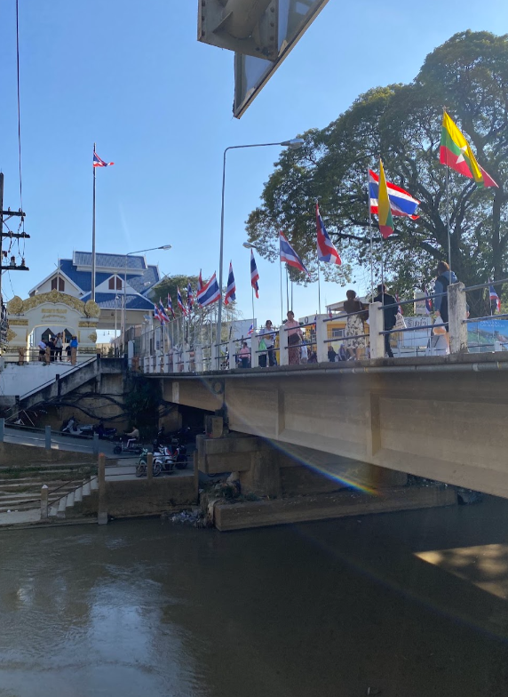
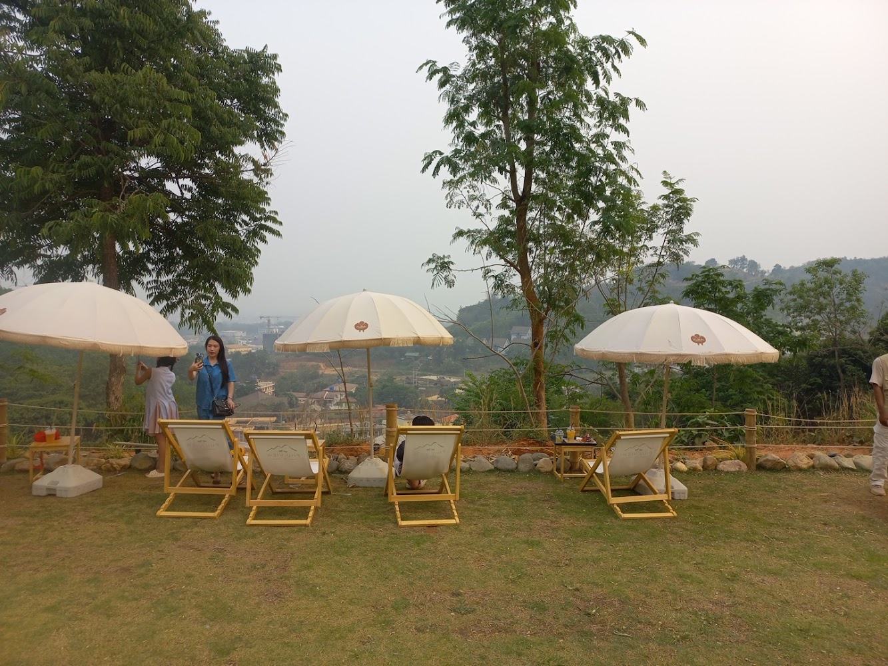

Attractions & Sightseeing In Tachileik
Discover the many attractions and interesting places in Tachileik, from scenic destinations and cultural landmarks to unique local spots. Whether you're looking to explore the town, enjoy beautiful surroundings, or experience something new, there's plenty to see and discover.

Shwe Chaung Thar
(ရွှေချောင်းသာ)
Shwe Chaung Thar is a local recreational spot in Tachileik, offering a relaxing outdoor setting with a swimming pool and food services. It is a pleasant place to cool off, unwind, and spend quality time with friends or family. With its casual atmosphere and leisure facilities, it is a nice destination for a laid-back day out.

Sistar's Water Park
Sistar's Water Park is a popular recreational attraction located in Pa Sak, Tachileik. It offers a fun outdoor environment where visitors can enjoy water activities, cool off, and spend time with friends or family. With its casual atmosphere, it is a great spot for a refreshing break and an enjoyable day out.

Tachileik Football stadium
Tachileik Football Stadium is a local outdoor sports venue in Tachileik, mainly used for football matches, training, and community sporting activities. It provides a space for local players and sports enthusiasts to enjoy football and stay active. With its community-focused atmosphere, the stadium is a notable destination for sports lovers visiting the town.

Bayinnaung King Monument
Bayinnaung King Monument is a historical landmark in Tachileik, dedicated to King Bayinnaung, one of the most prominent kings of the Taungoo Dynasty. The monument commemorates his legacy and historical influence in Myanmar. Surrounded by landscaped grounds and shaded trees, it offers visitors a peaceful place to explore, take photographs, and learn a little about the region's history.

Hotel Tachileik Resort (Swimming Pool)
Hotel Tachileik Resort is a resort-style hotel located in Wang Kaung Quarter, Tachileik, featuring an outdoor swimming pool and a relaxing atmosphere. The pool is one of its main attractions, providing a refreshing place for visitors to unwind and enjoy their free time. With its open surroundings, scenic views, and on-site restaurant, it is a pleasant destination for a relaxing getaway or a day by the pool.

Ruak River Border View
Looking along the Ruak River from the Myanmar side offers views of a rural-to-semi-urban river corridor rather than a dedicated tourist promenade. Unlike the Thai side, where established viewpoints and riverside roads are concentrated around Sop Ruak and the Golden Triangle, the Tachileik side is mostly made up of local communities, agricultural land, and border settlements.

Myanmar-Thailand Friendship Bridge
The Myanmar-Thailand Friendship Bridge is an important border crossing connecting Tachileik in Myanmar with Mae Sai in Thailand. Spanning the Sai River, the bridge serves as a major gateway for cross-border travel, trade, and daily movement between the two neighboring countries. It is also a recognizable landmark in Tachileik, offering a glimpse of the area's close connection with northern Thailand.

Phu View Camping Farm
(ภูวิว)
Phu View Camping Farm is an outdoor café destination in Tachileik, offering scenic surroundings, fresh air, and relaxing views of the surrounding landscape. With its open-air atmosphere and countryside setting, it provides a pleasant place to unwind, enjoy the scenery, and spend time away from the busy town center.